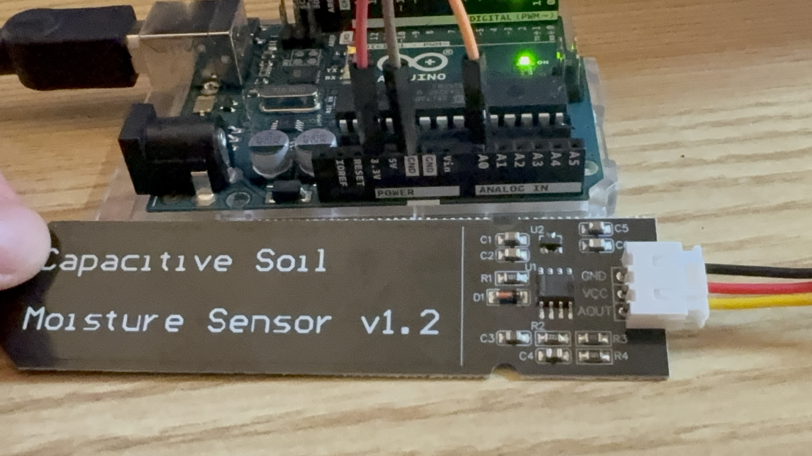

A small WaterPlant household. Click any plant for full profile, moisture chart, and watering history.
Plants

Epipremnum aureum (Golden Pothos)
Add another plant by editing plants/<id>.yaml
plants/<id>.yaml